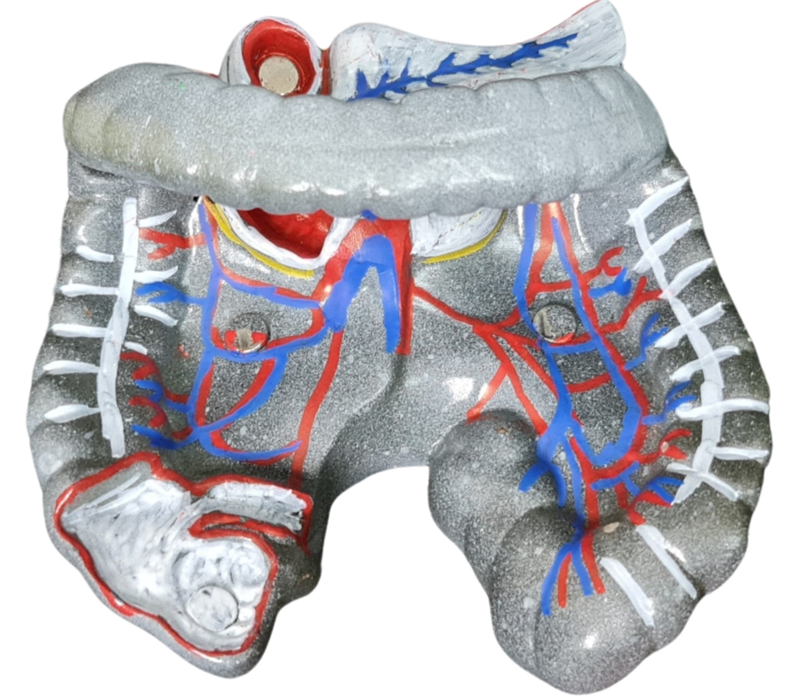

Structure:
- The large intestine is the final segment of the digestive system, measuring approximately 1.4 to 1.8 meters in length.
- It is divided into three sections: the cecum, colon, and rectum.
Function:
- The large intestine absorb water from the food matter passed from the small intestine and certain essential ions required by the body.
- It forms feces and expels them through coordinated contractions of the muscles in the sphincters and abdominal wall.